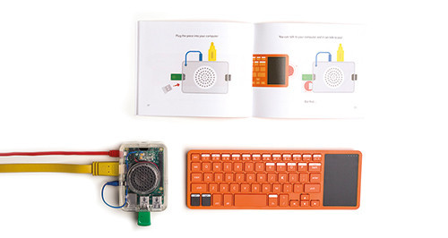

| 対象 | 小３〜中３（親子で参加可能） |
| 日時 | ６月〜１１月、第３土曜日9:30-11:30 (６回) |
| 場所 | 宇津木台町会会館 |
| 定員 | １０名 |
| 参加料 | 無料 ＋パソコン代１万４千円 |
| 申し込み期限 | ２０１６年５月２０日 |
| ６月１８日（土） | パソコンを組み立てよう |
| ７月１６日（土） | ゲーム作成（ヘビゲーム＆ポング） |
| ８月２０日（土） | マインクラフトで世界を作ろう |
| ９月１７日（土） | スクラッチでアニメ作成 |
| １０月１５日（土） | ソニックパイで音楽家になろう |
| １１月１９日（土） | ウェブページを作ろう |
Kanoと言う、自分で簡単に組み立てられるコンピューターを使い、 プログラミングの基礎を学ぶワークショップです。
Kanoは、子供向けに開発された小型コンピューターです。 キットで販売されていて、子供でも簡単に組み立てられます。
主な部品は、Raspberry Piボード、キーボードとスピーカーです。 使う時に（キットに含まれていない）モニターやテレビに繋ぎます。 基本ソフトウェアはLinuxで、様々なゲームやアプリが用意されています。
販売価格は120ドルでおおよそ14,000円です。 詳細は、Kanoのホームページ http://kano.me
このワークショップでは、コンピューターを自分で組み立てて、 コンピューターを操作するためのプログラムの作り方を少しずつ学んでいきます。 パソコン操作教室ではなく、つまり アプリやソフトの使い方を学ぶのではなく、 プログラムそのものの作り方を身に付けることがゴールです。 ゲームや音楽を通して、コンピュータープログラムを作りながら、 自分の発想を実現していきます。
このワークショップに参加するには、パソコンのことをあらかじめ 知る必要はないのですが、キーボードで命令を入力するので、文字 （アルファベット）を少し覚える必要があります。そのため、対象年齢を 小３〜中３とします。
保護者の方は、心配でしたら、あるいは自分でもちょっと見てみたい と思ったら、是非お子さんと一緒に参加してください。
ショパンと申します。
仕事で医療機器のソフトウェアを開発しています。 私がプログラミングと出会ったのは、小３の時でした。 お昼の時間に先生がパソコンを触らせてくれて、Apple IIでLOGOという プログラミング言語でカメを動かして絵を描いていました。
プログラミングのパッションを子供たちに伝えられたら嬉しいです。
ワークショップの参加は無料ですが、Kanoを購入する必要があります。 海外から購入しますので、2週間ぐらいかかります。余裕を持って購入することを お勧めします。また、ご自分で購入することが難しい場合、 代金を振り込んでいただければこちらでまとめて購入することも可能です。
また、Kanoを使う時にモニターやテレビが必要です （できればHDMI入力対応）。 家から持ってこられない方は、ご相談ください。
参加希望の方は、 |
何かご不明な点がございましたら、 |
パソコンの仕組みを理解するにはKanoのような、 シンプルなコンピューターが良いと考えています。 皆で同じ操作ができるように、環境を統一したいものです。 また、子供向けに開発されていますし、 オンラインのコミュニティーも存在するので、 楽しいと思います。
※ 本ワークショップはKanoとは連携していません。
現在、まだ日本語を対応していません。 OSを日本語対応することができないか検討しています。 ただ、ワークショップの中でゆっくり説明しますので、 英語の知識は必要ありません。 英語の単語を少し学ぶ機会になるかもしれません。
ご相談ください。
参加料を１回2500円で、Kanoを貸し出すことを検討しています。
但し、貸し出し希望者が多いとお断りする場合があります。
また、借りるなら、家に持ち帰ることができないのでご了承ください。
本ワークショップでは「Raspberry Pi 2 - $119.99」を使います。
お間違えのないようにお願いします。ご心配のある方は、購入前にご相談ください。
HDMIへの変換コネクターを買えば使えます。
慣れたら、こんな映画が簡単に作れます。
https://youtu.be/bUlaAuT_JVA
KanoはRaspberry Piで構成されて、色々な応用が考えられます。
ワークショップが終わってもずっと楽しんでいただけます。
Linuxのシンボルです。しかも可愛いでしょう。